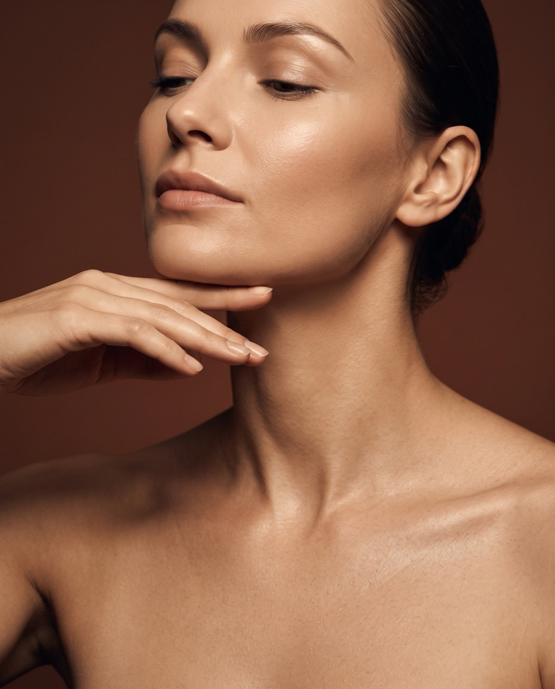

Radiofrekwencja mikroigłowa RF w Płocku – odmłodzenie bez skalpela
Poznaj sekrety młodej i promiennej skóry z radiofrekwencją mikroigłową – zabiegiem, który łączy mikronakłuwanie z działaniem fal radiowych, stymulując skórę do produkcji kolagenu i elastyny. Ciesz się wyraźnie odmłodzoną, zregenerowaną skórą i długotrwałymi efektami.
Cena już od:
950
zł
Dostępne dla tego zabiegu na recepcji w salonie
Zabiegi Hi-Tech
Radiofrekwencja mikroigłowa RF – co to jest i na czym polega zabieg?
Radiofrekwencja mikroigłowa to nowoczesny zabieg dermatologiczny, który łączy w sobie technologię mikronakłuwania oraz działanie fal radiowych. Zabieg polega na wprowadzeniu cienkich igieł w głąb skóry, co stymuluje procesy regeneracyjne oraz produkcję kolagenu i elastyny. W trakcie zabiegu, do igieł podawane są fale radiowe, które generują ciepło w tkankach, co dodatkowo wspomaga ujędrnianie skóry i poprawia jej elastyczność.
To idealny zabieg dla osób walczących ze zmarszczkami, bliznami, rozstępami czy nierównym kolorytem skóry. Zmęczona, szara cera, cienie pod oczami, utrata elastyczności czy opadające powieki to sygnał, że skóra potrzebuje odżywienia, intensywnego pobudzenia procesów regeneracyjnych oraz wzmocnienia. Jeśli zmagasz się z problemem rozstępów, cellulitu, blizn — również potrądzikowych — czy przebarwień, zabieg radiofrekwencji mikroigłowej jest idealnym rozwiązaniem.
FAQ
Najczęściej zadawane pytania
Ile zabiegów potrzeba, żeby zobaczyć efekty?
Efekty są widoczne już po pierwszym zabiegu, a długotrwałe przy regularnych sesjach. Rekomendujemy serię 3–5 zabiegów w odstępach 3–5 tygodni — to właśnie po serii widać najlepsze rezultaty.
Jak wygląda zabieg krok po kroku?
Zabieg rozpoczyna się od dokładnego oczyszczenia i przygotowania skóry. Następnie delikatne mikroigły nakłuwają skórę, tworząc w niej mikrokanaliki, a emitowana energia radiofrekwencyjna działa w głębszych warstwach skóry, stymulując procesy odnowy. Działanie fali odbywa się na poziomie skóry właściwej, powodując obkurczanie się włókien kolagenowych i pobudza procesy tworzenia nowego kolagenu.
Czym różni się terapia podstawowa od rozszerzonej?
Terapia rozszerzona to ten sam zabieg RF mikroigłowej, wzbogacony na zakończenie o zaawansowaną maskę terapeutyczną lub mezoterapię ampułką — dla maksymalnej regeneracji i spotęgowanego efektu. Obie terapie dostępne są w wariancie twarz, twarz + szyja oraz twarz + szyja + dekolt.
Jak przygotować się do zabiegu?
Około tygodnia przed zabiegiem unikaj przyjmowania środków obniżających krzepliwość krwi, takich jak aspiryna. Zaleca się również stosowanie maści wzmacniających z witaminą K, aby zminimalizować ryzyko powstawania siniaków i wspomóc proces regeneracji skóry.
Co robić po zabiegu?
Bezpośrednio po zabiegu skóra może być lekko zaczerwieniona i podrażniona. Ważne jest, aby nawilżać skórę i chronić ją przed słońcem, stosując kremy z wysokim filtrem SPF. Unikaj też intensywnego wysiłku fizycznego i gorących kąpieli przez kilka dni po zabiegu, aby umożliwić skórze odpowiednią regenerację.
Dla kogo jest ten zabieg?
Dla osób, które chcą zmniejszyć widoczność zmarszczek, ujędrnić i odmłodzić skórę oraz pobudzić ją do produkcji kolagenu i elastyny — a także zmagających się z rozstępami, cellulitem, bliznami (również potrądzikowymi) czy przebarwieniami.
Technologia mikroigłowej radiofrekwencji
Podwójna stymulacja. Mechaniczna i termiczna.
Zabieg łączy dwa potężne bodźce: kontrolowane mikronakłuwanie oraz falę radiową, która precyzyjnie podgrzewa głębokie warstwy skóry. Ta podwójna stymulacja mechaniczno-termiczna uruchamia natychmiastową produkcję nowego kolagenu i elastyny, zmuszając tkanki do intensywnej przebudowy strukturalnej.
Bodziec mechaniczny
Kontrolowane mikronakłuwanie
Cienkie igły wprowadzane w głąb skóry tworzą mikrokanaliki, uruchamiając naturalne procesy regeneracyjne skóry.
Bodziec termiczny
Energia fal radiowych
Fale radiowe podawane przez igły generują ciepło w głębszych warstwach skóry — na poziomie skóry właściwej — powodując obkurczanie się włókien kolagenowych.
Efekt strukturalny
Nowa produkcja kolagenu i elastyny
Podwójna stymulacja zmusza tkanki do intensywnej przebudowy — efekt to mocny lifting, uniesienie owalu twarzy oraz wyraźne zagęszczenie i ujędrnienie skóry.
Dopasowana intensywność
Terapia podstawowa i rozszerzona
Procedurę dopasowujemy do Twoich potrzeb — terapia rozszerzona kończy się dodatkowo koktajlem substancji aktywnych lub maską, dla spotęgowanego efektu regeneracji.

Przejrzysty cennik
Proste ceny dopasowane do wariantu i obszaru.
Cennik dzieli się na terapię podstawową i rozszerzoną oraz obszar zabiegowy (twarz, twarz + szyja, twarz + szyja + dekolt) — a cena i czas trwania są znane od razu, bez ukrytych kosztów i niespodzianek podczas płatności.
Wskazania do zabiegu
Ten zabieg pomoże, jeśli zależy Ci na:
Redukcji zmarszczek i linii oraz liftingu opadającego owalu twarzy
Wyraźnej poprawie jędrności i elastyczności skóry
Redukcji blizn, również potrądzikowych, i rozstępów
Zmniejszeniu widoczności rozszerzonych porów
Wyrównaniu kolorytu skóry i redukcji przebarwień
Walce z cellulitem
Odmłodzeniu zmęczonej, szarej cery i regeneracji na poziomie komórkowym
Cennik
Ile kosztuje radiofrekwencja mikroigłowa RF w Płocku?
Cena zależy od wariantu (terapia podstawowa lub rozszerzona) oraz obszaru zabiegowego. Poniżej sprawdzisz dokładny cennik.
Konsultacje
Pakiet PowitalnyPromocja
149 zł
Dermokonsultacja · 35 min
149 zł
ZarezerwujPrezent na start: jeśli po konsultacji zdecydujesz się na rekomendowany zabieg (w tym samym dniu lub w ciągu 14 dni), cała kwota 149 zł zostanie odliczona od jego ceny. Ekspercki plan opieki otrzymujesz w prezencie!
Wizyta kontrolna · 15 min
0 zł
Zabieg
od 950 zł
Terapia podstawowa - twarz · 1 godz. i 5 min
950 zł
ZarezerwujTerapia podstawowa - twarz + szyja · 1 godz. i 10 min
1250 zł
ZarezerwujTerapia podstawowa - twarz + szyja + dekolt · 1 godz. i 20 min
1550 zł
ZarezerwujTerapia rozszerzona - twarz · 1 godz. i 5 min · Z maską lub mezoterapią ampułką na zakończenie.
1150 zł
ZarezerwujTerapia rozszerzona - twarz + szyja · 1 godz. i 10 min · Z maską lub mezoterapią ampułką na zakończenie.
1450 zł
ZarezerwujTerapia rozszerzona - twarz + szyja + dekolt · 1 godz. i 20 min · Z maską lub mezoterapią ampułką na zakończenie.
1750 zł
ZarezerwujZalecenia zabiegowe i przeciwwskazania
Postępowanie przed i po zabiegu
- Aktywne infekcje skórne
- Ciąża i okres karmienia piersią
- Rozrusznik serca lub implanty metalowe w obszarze zabiegowym
- Choroby serca
- Skłonność do bliznowców
- Niektóre choroby autoimmunologiczne
- Padaczka
- Około tygodnia przed zabiegiem unikaj przyjmowania środków obniżających krzepliwość krwi, takich jak aspiryna.
- Zaleca się stosowanie maści wzmacniających z witaminą K, aby zminimalizować ryzyko powstawania siniaków i wspomóc proces regeneracji skóry.
- Bezpośrednio po zabiegu skóra może być lekko zaczerwieniona i podrażniona.
- Nawilżaj skórę i chroń ją przed słońcem, stosując kremy z wysokim filtrem SPF.
- Unikaj intensywnego wysiłku fizycznego i gorących kąpieli przez kilka dni po zabiegu, aby umożliwić skórze odpowiednią regenerację.
- Dla najlepszych efektów wykonaj rekomendowaną serię 3–5 zabiegów, w odstępach 3–5 tygodni.